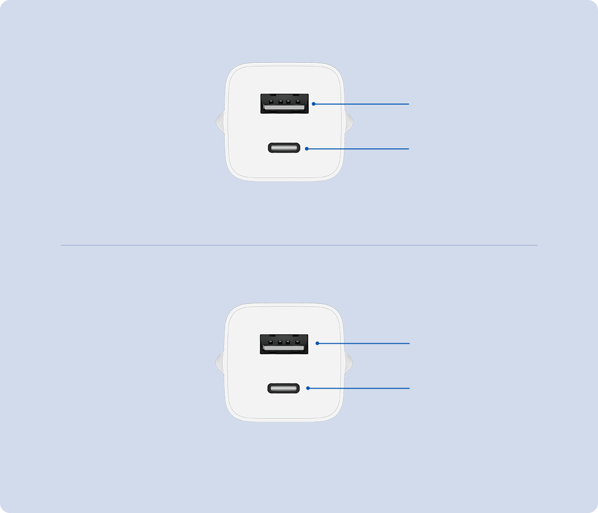

Carregador Xiaomi de 65W GaN com Dupla Saída (USB-A+USB-C)
Cabe na palma da mão
Até 65W Tipo-C
Carregamento rápido com duas saídas
*Cabo Tipo-C para Tipo-C de alta corrente de 5A incluso na embalagem.
GaN (nitreto de gálio)
Menor, mais leve e mais eficiente
GaN é um novo tipo de material semicondutor que possui alta condutividade térmica e resistência
a altas temperaturas, ácidos e álcalis. O carregador não é apenas leve e cabe no bolso, mas possui vantagens na conversão de energia quando comparado a
carregadores não GaN com a mesma potência.
Tamanho ultracompacto que cabe na palma da sua mão
Tamanho ultracompacto, pode ser segurado na palma da sua mão e cabe facilmente no seu bolso.
Perfeito para viagens de negócios
Carregamento rápido PD 65W para laptops
A porta de alimentação Tipo-C produz até 65W para carregar o novo MacBook Pro,
Mi Notebook e outros dispositivos de alta potência.
Carregamento rápido de saída dupla
No modo de saída única, a saída Tipo-C fornece até 65W e a saída USB-A até 18W.
As duas saídas podem fornecer carregamento rápido para dispositivos simultaneamente.
Utilizando uma saída
Até 18W
Até 65W

Utilizando ambas saídas simultaneamente
Até 18W
Até 45W
Carrega 100% em 28 minutos
Compatível com o Xiaomi 12 e carrega até 100%* em 28 minutos.
Alta corrente de 5A
A embalagem inclui cabo Mi Tipo-C para Tipo-C com chip E-Marker interno, que suporta carregamento rápido de até 5A.
Comprimento de 1,5m para atender às suas necessidades de carregamento em diferentes situações.
Compatibilidade inteligente
Compatível com uma ampla gama de dispositivos
Detecção inteligente de corrente de saída, ampla compatibilidade, incluindo MacOS, Android
e consoles de jogos portáteis.
Tranquilidade com ampla segurança
Utiliza solução de chip importado para identificação inteligente de corrente
e correspondência com o dispositivo conectado, protegendo contra a bateria de danos. Ampla proteção de segurança durante o uso,
eficiência aprimorada e carregamento mais rápido.
Proteção contra sobretensão
Proteção de sobrecorrente de entrada
Proteção de sobrecorrente de saída
Proteção contra curto-circuito
Proteção contra superaquecimento
Baixa interferência eletromagnética
Baixa ondulação
Resistente à eletricidade estática
Notas:
*Dados de tempo de carregamento: a velocidade de carregamento pode variar dependendo do uso do dispositivo,
condições e outros fatores.
*Salvo indicação em contrário, todos os dados de teste acima são do Laboratório Zimi.
O desempenho real pode variar dependendo das mudanças ambientais objetivas.